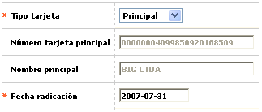

Novedad tarjeta amparada/extendida/adicional a principal |
En este formulario invocado desde la opción ingreso de novedades, (issuer) y que aplica exclusivamente para tarjetas que no sean principales, la entidad puede efectuar el cambio para convertir una tarjeta amparada, extendida o adicional en principal, rompiendo el vínculo de dependencia existente actualmente con la tarjeta de la cual depende.

Descripción de campos
Tipo tarjeta |
Campo obligatorio tipo combo, en el cual se muestra inicialmente el tipo de tarjeta actual a la cual se le va a aplicar la novedad, y de la que se selecciona la opción Principal para indicar la acción a ejecutar. |
Número tarjeta principal |
En este campo de salida se despliega el número actual de la tarjeta del cliente principal al que se encuentra asociada la tarjeta que desea "independizarse". |
Nombre principal |
Campo de salida en el que se muestra el nombre del cliente a quien pertenece la tarjeta principal a la que se encuentra asociada la tarjeta que desea "independizarse". |
Fecha radicación |
Campo obligatorio en el que se registra en formato YYYY-MM-DD la fecha en la cual se ingresó el cambio de tarjeta dependiente a principal y que puede ser una fecha anterior a la actual del sistema, facilitando el ingreso de novedades de fechas anteriores. |